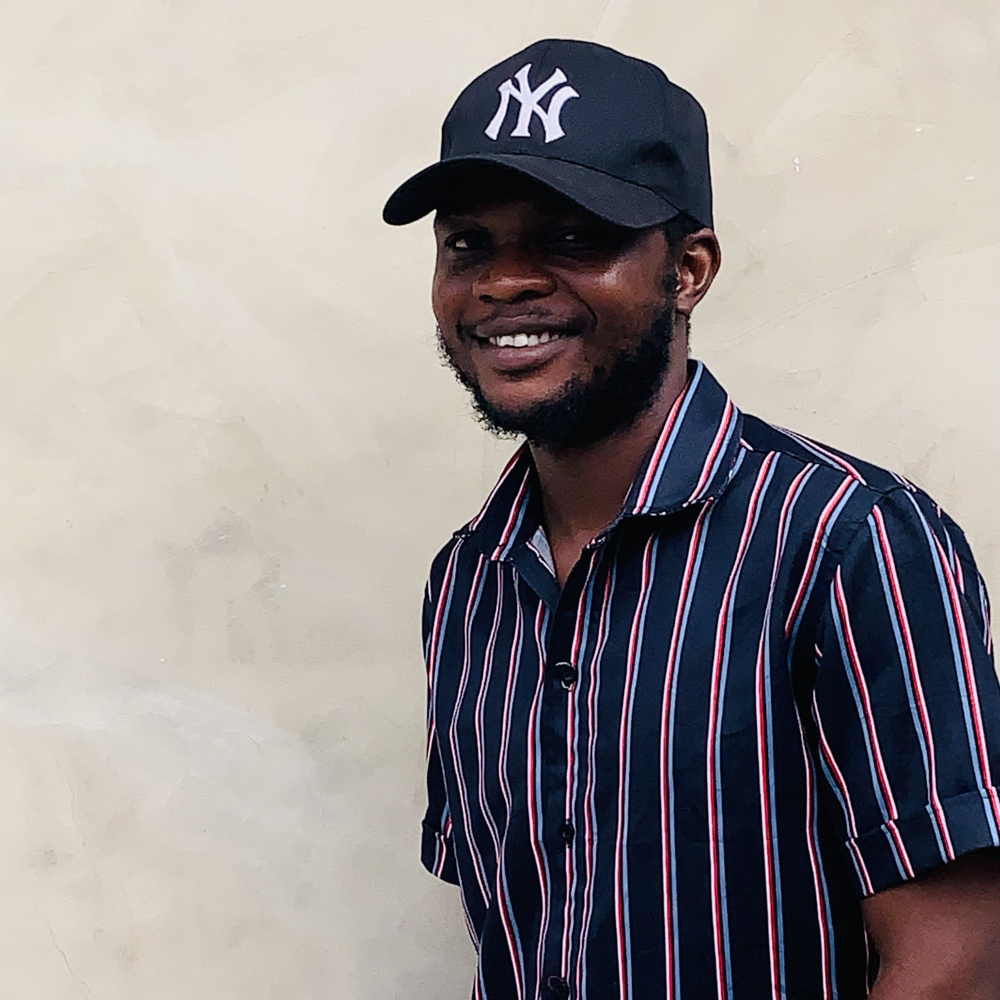

Daniel Oluwasegun Omotehinse
Full Stack Web Developer
My Story
Hello! I'm Daniel, a passionate full-stack web developer based in Lagos, Nigeria. My journey into programming began during my high school years when I first discovered the magic of creating something from nothing with just lines of code.
What started as curiosity has evolved into a deep passion for web development. I love the entire process of building web applications - from conceptualizing the user experience to implementing complex backend logic. Every project is an opportunity to learn something new and push the boundaries of what's possible.
My goal is to work remotely as a full-stack developer, creating meaningful digital experiences that solve real-world problems. I believe in writing clean, maintainable code and staying up-to-date with the latest technologies and best practices.
Beyond Coding
When I'm not immersed in code, you'll find me expressing my creativity through music. I'm an accomplished musician who plays drums, talking drums, and bass guitar. Music and coding share many similarities - both require creativity, precision, and the ability to bring harmony to complex elements.
I'm also quite jovial and love making people laugh. If I had to choose an alternative career path, it would definitely be comedy! 😄 I believe that a good sense of humor is essential in both life and work, especially when debugging code at 2 AM.
My Philosophy
"Anything is possible, you just have to believe and try"
This quote drives everything I do. Whether it's learning a new framework, tackling a complex problem, or pursuing a challenging project, I approach it with optimism and determination.